Introduction
This document provides a brief introduction to the finite element method and illustrates how the method is implemented in oomph-lib. The first few sections present a brief, self-contained derivation of the method. The exposition is "constructive" and avoids a number of subtleties, which can be found in standard textbooks [e.g. E.B. Becker, G.F. Carey, and J.T. Oden. Finite Elements: An Introduction. Prentice-Hall, Englewood Cliffs, New Jersey, (1981)] . We generally assume that all functions are sufficiently "well behaved" so that all mathematical manipulations "make sense". Function spaces are only used where they help to make the notation more compact.
Readers who are familiar with the theory of finite elements may skip the introductory sections, but should consult the section An object-oriented implementation which explains the particular implementation used in oomph-lib.
Initially, we develop the method for scalar second-order (elliptic) PDEs with Dirichlet boundary conditions, using classical 1D and 2D Poisson problems as model problems. Specifically, we consider the 1D problem
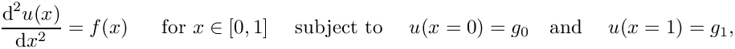
where  and the constants
and the constants  and 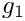 are given. The 2D equivalent is given by
and 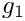 are given. The 2D equivalent is given by
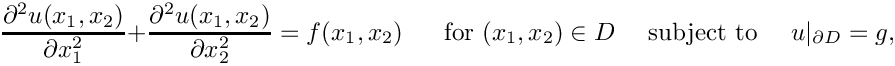
where 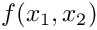 and 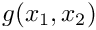 are given.
Throughout this document, we use index notation and write, e.g., 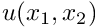 as 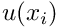. We do not explicitly state the range of free indices where it is clear from the context – in the above example it would be equal to the spatial dimension of the problem. All mathematical derivations are presented using the "natural" numbering of the indices: e.g., the components of the 3D vector 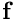 are 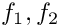 and 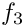. Unfortunately, this notation is inconsistent with the implementation of vectors (and most other standard "containers") in C++ where the indices start from 0 and the components of vector<double> f(3) are f[0], f[1] and f[2]. There is no elegant way to resolve this conflict. Adopting C++-style numbering in the theoretical development would make the mathematics look very odd (try it!); conversely, adopting the "natural" numbering when discussing the C++-implementation would make this documentation inconsistent with the actual implementation. We therefore use both numbering systems, each within their appropriate context. |
Physically, the Poisson equation describes steady diffusion processes. For instance, the 2D Poisson problem describes the temperature distribution  within a 2D body,
within a 2D body,  , whose boundary
, whose boundary  is maintained at a prescribed temperature, 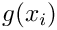. The function 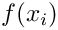 describes the strength of (distributed) heat sources in the body. In practical applications, the strength of these heat sources is bounded because no physical process can release infinite amounts of energy in a finite domain. Hence, we assume that
is maintained at a prescribed temperature, 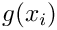. The function 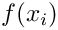 describes the strength of (distributed) heat sources in the body. In practical applications, the strength of these heat sources is bounded because no physical process can release infinite amounts of energy in a finite domain. Hence, we assume that
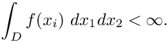
We usually write all PDEs in "residual form", obtained by moving all terms to the left-hand-side of the equation, so that the general second-order scalar PDE problem is
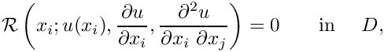 with Dirichlet (essential) boundary conditions on 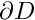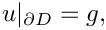 where the function 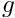 is given |
To keep the notation compact, we suppress the explicit dependence of 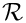 on the derivatives and write the residual as
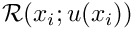. For example, the residual forms of the two Poisson problems are given by:
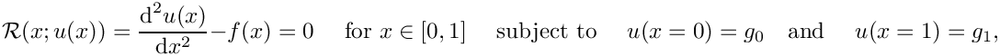 where and the constants and are given. |
and
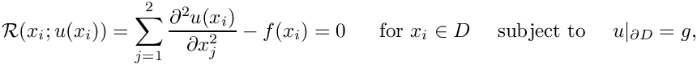 where and are given, and 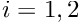. |
We stress that neither the finite element method, nor oomph-lib are restricted to scalar second-order PDEs. Documentation for the example drivers discusses generalisations to:
- non-Dirichlet boundary conditions
- systems of PDEs
- mixed interpolation
- discontinuous interpolation
- timestepping
- higher-order PDEs
- solid mechanics and Lagrangian coordinates.
Mathematical background
The weak solution
A classical (or strong) solution of the problem P is any function that satisfies the PDE and boundary condition at every point in  ,
,
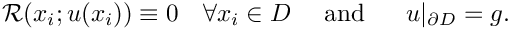
The concept of a "weak" solution is based on a slight relaxation of this criterion. A weak solution, 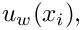 of problem P is any function that satisfies the essential boundary condition,
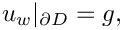
and for which the so-called "weighted residual"
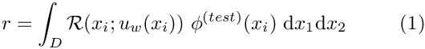
vanishes for any "test function" 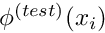 which satisfies homogeneous boundary conditions so that
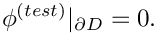
At this point it might appear that we have fatally weakened the concept of a solution. If we only require the PDE to be satisfied in an average sense, couldn't any function
be a "solution"? In fact, this is not the case and we shall now demonstrate that, for all practical purposes [we refer to the standard literature for a rigorous derivation], the statement
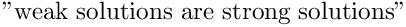
is true. The crucial observation is that the weak solution requires the weighted residual to vanish for any test function. To show that this is equivalent to demanding that 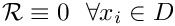 (as in the definition of the strong solution), let us try to construct a counter-example for which 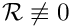 in some part of the domain (implying that the candidate solution is not a classical solution) while 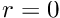 (so that it qualifies as a weak solution). For simplicity we illustrate the impossibility of this in a 1D example. First consider a candidate solution 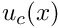 which satisfies the essential boundary condition but does not satisfy the PDE anywhere, and that 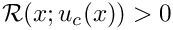 throughout the domain, as indicated in this sketch:
Could this candidate solution possibly qualify as a weak solution? No, using the trivial test function 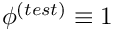 gives a nonzero weighted residual, and it follows that 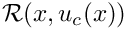 must have zero average if 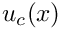 is to qualify as a weak solution.
The figure below shows the residual for a more sophisticated candidate solution which satisfies the PDE over most of the domain.

The residual is nonzero only in two small subdomains, 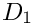 and 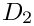. The candidate solution is such that the residual has different signs in and so that its average over the domain is zero. Could this solution qualify as a weak solution? Again the answer is no because we can choose a test function that is nonzero in only one of the two subdomains (e.g. the function shown by the red/dotted line), which gives a nonzero weighted residual.
It is clear that such a procedure may be used to obtain a nonzero weighted residual whenever the residual is nonzero anywhere in the domain. In other words, a weak solution is a strong solution, as claimed. [To make this argument mathematically rigorous, we would have to re-assess the argument for (pathological) cases in which the residual is nonzero only at finite number of points, etc.].
A useful trick: Integration by parts
Consider now the weak form of the 2D Poisson problem P2,
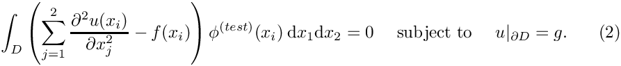
After integration by parts and use of the divergence theorem, we obtain
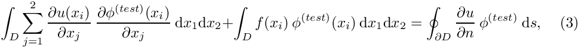
where  is the arclength along the domain boundary
is the arclength along the domain boundary  and 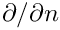 the outward normal derivative. Since the test functions satisfy homogeneous boundary conditions, 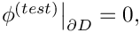 the line integral on the RHS of equation (3) vanishes. Therefore, an alternative version of the weak form of problem P2 is given by
and 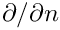 the outward normal derivative. Since the test functions satisfy homogeneous boundary conditions, 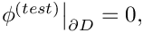 the line integral on the RHS of equation (3) vanishes. Therefore, an alternative version of the weak form of problem P2 is given by
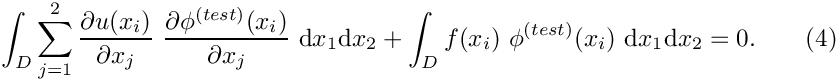
We note that (4) involves first derivatives of the unknown function  and the test function 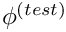, whereas (2) involves second derivatives of and the zero-th derivatives of . The advantages of using the "symmetric", integrated-by-parts version of the weak form will become apparent in the subsequent sections.
and the test function 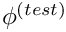, whereas (2) involves second derivatives of and the zero-th derivatives of . The advantages of using the "symmetric", integrated-by-parts version of the weak form will become apparent in the subsequent sections.
[Nearly an aside:] Function spaces
We stated in the introduction that all functions are assumed to be sufficiently "well-behaved" so that all mathematical manipulations "make sense". It is important to realise that we have already (tacitly) used this assumption in the derivation of the weak form. The weak form does not "make sense" if we allow candidate solutions and test functions for which the integral in (1) does not exist. This imposes restrictions on the types of functions that are "admissible" in our problem. The precise form of these restrictions depends on the form of the residual  , and, typically, the restrictions are related to the functions' differentiability. It is convenient to employ the concept of a "function space" to collectively refer to all functions that satisfy the required restrictions. [In this introduction, none of the additional (heavy) machinery from functional analysis is required].
, and, typically, the restrictions are related to the functions' differentiability. It is convenient to employ the concept of a "function space" to collectively refer to all functions that satisfy the required restrictions. [In this introduction, none of the additional (heavy) machinery from functional analysis is required].
For instance, we can ensure that the integrated-by-parts version of problem P2 in equation (4) "makes sense" if we restrict  and to all functions whose zeroth and first derivatives are square integrable over the domain . These functions are members of a (well-known) function space that is usually denoted by 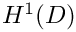. In fact, is a particular instance of a family of function spaces – the Sobolev spaces 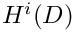 where 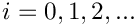 which contain all functions whose zeroth, first, ..., i-th derivatives are square-integrable over the domain . The members of these function spaces have the property that
and to all functions whose zeroth and first derivatives are square integrable over the domain . These functions are members of a (well-known) function space that is usually denoted by 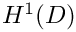. In fact, is a particular instance of a family of function spaces – the Sobolev spaces 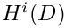 where 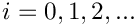 which contain all functions whose zeroth, first, ..., i-th derivatives are square-integrable over the domain . The members of these function spaces have the property that
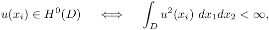
etc. We use the subscript "0" to restrict a given function space to the subset of its members which vanish on the domain boundary
Using these function spaces, we can provide a concise definition of the weak form of problem P2:
and for which for all test functions |
It is important to realise that the choice of suitable function spaces for and is problem-dependent,
guided by the inspection of the weak form for a specific problem. The (pragmatic) procedure is straightforward: write down the weak form and determine the (minimal) constraints that must be imposed on and for the weak form to "make sense". All functions that satisfy these constraints, are "admissible" and, collectively, they form a function space , say. The weak form of the general problem P can then be written as
and for which for all test functions |
[If you followed the above argument carefully you will have realised that our strategy for ensuring that the weak form "makes sense" uses a sufficient rather than a necessary condition. For instance, it is not necessary for and to be members of the same function space. Alternative formulations are possible but we shall not pursue such ideas any further in this introduction.]
The Galerkin method
We now exploit the definition of the weak solution to develop a numerical method that can be used to determine approximate solutions to problem Pweak. We start by splitting the solution into two parts,
where is an (arbitrary) function that satisfies the Dirichlet boundary conditions,
The unknown function then has to satisfy the homogeneous boundary conditions
We expand in terms of a (given) infinite set of basis functions ,
which discretises the problem because the solution is now determined by the (as yet unknown) discrete coefficients There are many possible sets of basis functions: polynomials, trigonometric functions, systems of eigenfunctions; mathematically speaking, the only requirement is that the basis functions are sufficiently general that the solution can be represented by the expansion (5). In other words, the functions must be a complete basis for .
How do we determine the discrete coefficients ? Inserting the expansion for  into the definition of the weighted residual yields
into the definition of the weighted residual yields
and we recall that this equation must be satisfied for any test function . The functions form a complete basis for  , and so all possible test functions may be represented as
, and so all possible test functions may be represented as
Thus, the condition
becomes
Inserting the expansion (7) into the definition of the weak solution (6) yields
where
Equation (8) must hold for any value of the coefficients , so the coefficients must satisfy the equations
In practice, we truncate the expansions (5) and (7) after a finite number of terms to obtain the approximations (indicated by tildes)
and we determine the unknown coefficients, , from the algebraic equations
The number of terms in each truncated expansion must be the same, so that we obtain equations for unknowns.
The truncation of the expansions (5) and (7) introduces two approximations:
- The approximate solution is a member of the finite-dimensional function space spanned by the basis functions included in the expansion (10).
- We "test" the solution with functions from rather than with "all" functions
as , however, so the approximate solution converges to the exact solution as we include more and more terms in the expansion. [The precise definition of "convergence" requires the introduction of a norm, which allows us to measure the "difference" between two functions. We refer to the standard literature for a more detailed discussion of this issue.]
In general, the equations are nonlinear and must be solved by an iterative method such as Newton's method. Consult your favourite numerical analysis textbook (if you can't think of one, have a look through chapter 9 in Press, W. H.; Flannery, B. P.; Teukolsky, S. A.; and Vetterling, W. T. "Numerical Recipes in C++. The Art of Scientific Computing", Cambridge University Press) for a reminder of how (and why) Newton's method works. The following algorithm shows the method applied to our equations:
- Set the iteration counter and provide an initial approximation for the unknowns, .
- Evaluate the residuals
- Compute a suitable norm of the residual vector (e.g. the maximum norm). If the norm is less than some pre-assigned tolerance, stop and and accept as the solution.
- Compute the Jacobian matrix
- Solve the linear system
for - Compute an improved approximation via
- Set and go to 2.
For a "good" initial approximation, , Newton's method converges quadratically towards the exact solution. Furthermore, for linear problems, Newton's method provides the exact solution (modulo any roundoff errors that might be introduced during the solution of the linear system) in a single iteration. Newton's method can, therefore, be used as a robust, general-purpose solver, if (!) a good initial guess for the solution can be provided. In practice, this is not a serious restriction, because good initial guesses can often be generated by continuation methods. In oomph-lib, Newton's method is the default nonlinear solver.
Let us, briefly, examine the cost of the non-trivial steps involved in Newton's method:
- Step 2 requires the evaluation of integrals over the domain to determine the discrete residuals from (9). (We note that, in general, the integrals must be evaluated numerically.)
- Step 3 requires the computation of entries in the Jacobian matrix, each an integral of the form
- Step 4 requires the solution of a linear system.
In general, steps 3 and 4 will be very costly if is large. However, if the domain has a simple shape and the differential operator has a sufficiently simple structure, it is often possible to choose basis functions with suitable orthogonality properties that render the Jacobian matrix sparse. As an example, we consider the application of Galerkin's method in the 1D Poisson problem P1:
We perform the usual integration by parts to derive the symmetric weak form of the problem:
and for which for all test functions |
Inspection of the weak form shows that the choice is sufficient to ensure the existence of the integral. Of course, the "higher" Sobolev spaces would also ensure the existence of the integral but would impose unnecessary additional restrictions on our functions.
Next, we need to construct a function that satisfies the Dirichlet boundary conditions. In 1D this is trivial, and the simplest option is the function , which interpolates linearly between the two boundary values. Since , the discrete residuals are given by
and the Jacobian matrix has the form
The (Fourier) basis functions
are a suitable basis because
- they satisfy the homogeneous boundary conditions,
- they and their derivatives are square integrable, allowing all integrals to be evaluated, and
- they are a complete basis for
 .
.
Furthermore, the orthogonality relation
implies that the Jacobian matrix is a diagonal matrix, which is cheap to assemble and invert. Indeed, the assembly of the Jacobian matrix in step 4, and the solution of the linear system in step 5 have an "optimal" computational complexity: their cost increases linearly with the number of unknowns in the problem.
Unfortunately, the application of the method becomes difficult, if not impossible, in cases where the differential operators have a more complicated structure, and/or the domain has a more complicated shape. The task of finding a complete set of basis functions that vanish on the domain boundary in an arbitrarily-shaped, higher-dimensional domain is nontrivial. Furthermore, for a complicated differential operator, it will be extremely difficult to find a system of basis functions for which the Jacobian matrix has a sparse structure. If the matrix is dense, the assembly and solution of the linear system in steps 4 and 5 of Newton's method can become prohibitively expensive.
Let us briefly return to the two versions of the weak form and examine the equations that we would have obtained had we applied Galerkin's method to the original form of the weak equations, The discrete residuals are then given by and the Jacobian matrix has the form
|
The Finite Element Method
Galerkin's method is an efficient method for finding the approximate solution to a given problem if (and only if) we can:
- Construct a function that satisfies the essential boundary conditions.
- Specify a set of basis functions that
- spans the function space ,
- vanishes on the domain boundary, and
- leads to a sparse Jacobian matrix.
We shall now develop the finite element method: an implementation of Galerkin's method that automatically satisfies all the above requirements. - spans the function space
Finite Element shape functions
The key feature of the finite element method is that the basis functions have finite support, being zero over most of the domain, and have the same functional form. We illustrate the idea and its implementation for the 1D Poisson problem P1 in its symmetric (integrated-by-parts) form:
![\[ r_k = \int_0^1 \left\{ \left( \frac{\mbox{d}
u_p(x)}{\mbox{d} x} +\sum_{j=1}^{M} U_{j} \frac{\mbox{d}
\psi_j(x)}{\mbox{d} x} \right)
\frac{\mbox{d} \psi_k(x)}{\mbox{d} x} +
f(x) \ \psi_k(x) \right\} \mbox{d}x =0, \mbox{\ \ \ \ \
\ for $k=1,...,M.$}\ \ \ \ \ \ \ (16) \]](form_142.png)
The integral (16) exists for all basis functions whose first derivatives are square integrable; a class of functions that includes piecewise linear functions.
We shall now construct a particular set of piecewise linear basis functions — the (global) linear finite-element shape functions, often known as "hat functions". For this purpose, we introduce  equally-spaced "nodes" into the domain
equally-spaced "nodes" into the domain ![$ x \in [0,1]$](form_145.png) ; node
; node  is located at , where is the distance between the nodes. The (global) linear finite-element shape functions are defined by
is located at , where is the distance between the nodes. The (global) linear finite-element shape functions are defined by
and are illustrated below:

The finite-element shape functions have finite support; in particular, the function is nonzero only in the vicinity of node j and varies linearly between one (at node j) and zero (at nodes and ). Furthermore, the shape functions satisfy the "interpolation condition"
where is the Kronecker delta.
The coefficients in an expansion of the form
have a straightforward interpretation: is the value of the function at node  . The global shape functions vary linearly between the nodes, and so provides piecewise linear interpolation between the ‘nodal values’ .
. The global shape functions vary linearly between the nodes, and so provides piecewise linear interpolation between the ‘nodal values’ .
Why are these shape functions useful in the Galerkin method? Consider the requirements listed at the beginning of this section:
- It is easy to construct a function that satisfies the essential boundary conditions by choosing
where and are the global finite-element shape functions associated with the two boundary nodes, and .
and . - Regarding the requirements on the basis functions:
- The global finite-element shape functions and their first derivatives are square integrable. Hence, the finite-dimensional function space spanned by the basis functions , associated with the internal nodes, is a subset of as required. Furthermore, it is easy to show that
for any . In other words, approaches as![\[ \left| v(x) - \sum_{j=2}^{N-1} v(X_j)
\psi_j(x) \right| \to 0
\mbox{\ \ \ as $N\to\infty$ and $h=\frac{1}{N-1}
\to 0,$ \ \ \ \ \ \ \
(18) } \]](form_167.png)
- The global finite-element shape functions vanish on the domain boundary.
- The Jacobian matrix is sparse because its entries
are nonzero when the basis functions and are both non-zero. For these shape functions,
indicating that the Jacobian matrix is tri-diagonal.
- The global finite-element shape functions and their first derivatives are square integrable. Hence, the finite-dimensional function space spanned by the basis functions , associated with the internal nodes, is a subset of as required. Furthermore, it is easy to show that
We can now formulate the finite-element-based solution of problem P1 in the following algorithm:
- Choose the number of nodal points, , and distribute them evenly through the domain so that , where . This defines the global shape functions .
- Set
and - Provide an initial guess for the unknowns . Since P1 is a linear problem, the quality of the initial guess is irrelevant and we can simply set
- Determine the residuals
and the entries in the Jacobian matrix - Solve the linear system
for . - Correct the initial guess via
P1 is a linear problem, so is the exact solution. For nonlinear problems, we would have to continue the Newton iteration until the residuals were sufficiently small. - The finite-element solution is
Improving the quality of the solution: non-uniformly spaced nodes and higher-order shape functions
Algorithm 2 presents the simplest possible implementation of the finite element method for problem P1. We now discuss two straightforward extensions that can significantly improve the quality of the approximate solution.
The finite-element approximation in the previous section is piecewise linear between the nodal values. The accuracy to which the exact solution can be represented by a piecewise linear interpolant is limited by the number of nodal points, which is the essence of the convergence statement (18). The number of nodes required to resolve the solution to a given accuracy depends on the nature of the solution — more nodes are needed to interpolate rapidly varying functions.
If the solution is rapidly varying in a small portion of the domain it would be wasteful to use the same (fine) nodal spacing throughout the domain. A non-uniform spacing, see below,
improves the accuracy of the solution without greatly increasing the total number of unknowns. Non-uniform spacing of the nodes is easy to implement and does not require any significant changes in Algorithm 2 – we simply choose appropriate values for the nodal positions ; an approach known as "h-refinement" because it alters the distance, , between nodes.
A non-uniform distribution of nodes requires a priori knowledge of the regions in which we expect the solution to undergo rapid variations. The alternative is to use adaptive mesh refinement: start with a relatively coarse, uniform mesh and compute the solution. If the solution on the coarse mesh displays rapid variations in certain parts of the domain (and is therefore likely to be poorly resolved), refine the mesh in these regions and re-compute. Such adaptive mesh refinement procedures can be automated and are implemented in oomph-lib for a large number of problems; see the section A 2D example for an example. |
The quality of the interpolation can also be improved by using higher-order interpolation, but maintaining
- the compact support for the global shape functions, so that is nonzero only in the vicinity of node , and
- the interpolation condition
so that the shape function is equal to one at node and zero at all others.
For instance, we can use the (global) quadratic finite-element shape functions shown below:
Note that we could also use shape functions with identical functional forms; instead, we have chosen two different forms for the shape functions so that the smooth sections of the different shape functions overlap within the elements. This is not necessary but facilitates the representation of the global shape functions in terms of their local counterparts within elements, see section Local coordinates.
The implementation of higher-order interpolation does not require any significant changes in Algorithm 2. We merely specify the functional form of the (global) quadratic finite-element shape functions sketched above. This approach is known as "p-refinement", because it increases order of the polynomials that are used to represent the solution.
An element-by-element implementation for 1D problems
From a mathematical point of view, the development of the finite element method for the 1D model problem P1 is now complete, but Algorithm 2 has a number of features that would make it awkward to implement in an actual computer program. Furthermore, having been derived directly from Galerkin's method, the algorithm is based on globally-defined shape functions and does not exploit the potential subdivision of the domain into "elements". We shall now derive a mathematically equivalent scheme that can be implemented more easily.
Improved book-keeping: distinguishing between equations and nodes.
Since only a subset of the global finite-element shape functions act as basis functions for the (homogeneous) functions and , algorithm 2 resulted in a slightly awkward numbering scheme for the equations and the unknown (nodal) values. The equation numbers range from 2 to , rather than from 1 to because we identified the unknowns by the node numbers. Although this is perfectly transparent in our simple 1D example, the book-keeping quickly becomes rather involved in more complicated problems. We therefore treat node and equation numbers separately. [Note: We shall use the terms "equation number" and "number of the unknown" interchangeably; this is possible because we must always have the same number of equations and unknowns.] We can (re-)write the finite-element solution (19) in more compact form as
where the summation now includes all nodes in the finite element mesh. To make this representation consistent with the boundary conditions, the nodal values, , of nodes on the boundary are set to the prescribed boundary values
In the 1D problem P1, and .
Furthermore, we associate each unknown nodal value, , with a distinct equation number, , in the range from 1 to . In the above example, the equation numbering scheme is given by
where n/a indicates a node whose value is prescribed by the boundary conditions. To facilitate the implementation in a computer program, we indicate the fact that a nodal value is determined by boundary conditions (i.e. that it is "pinned"), by setting the equation number to a negative value (-1, say), so that the equation numbering scheme becomes
We now re-formulate algorithm 2 as follows (the revised parts of the algorithm are enclosed in boxes):
Phase 1: Setup
- Discretise the domain with nodes which are located at , and choose the order of the global shape functions
- Initialise the total number of unknowns,
- Loop over all nodes :
- If node j lies on the boundary:
- Assign its value according to the (known) boundary condition
- Assign a negative equation number to reflect its "pinned" status:
- Assign its value according to the (known) boundary condition
- Else:
- Increment the number of the unknowns
- Assign the equation number
- Provide an initial guess for the unknown nodal value, e.g.
![\[ U_j=0. \]](form_214.png)
- Increment the number of the unknowns
- If node j lies on the boundary:
- Now that and have been defined and initialised, we can determine the current FE approximations for and from
Phase 2: Solution
|
- Solve the linear system
for .
|
- P1 is a linear problem, so is the exact solution. For nonlinear problems, we would have to continue the Newton iteration until the residuals were sufficiently small.
Phase 3: Postprocessing (document the solution)
- The finite-element solution is given by
Element-by-element assembly
In its current form, our algorithm assembles the equations and the Jacobian matrix equation-by-equation and does not exploit the finite support of the global shape functions, which permits decomposition of the domain into elements. Each element consists of a given number of nodes that depends upon the order of local approximation within the element. In the case of linear interpolation each element consists of two nodes, as seen below:
In the following three sections we shall develop an alternative, element-based assembly procedure, which involves the introduction of
- local and global node numbers,
- local and global equation numbers,
- local coordinates.
Local and global node numbers
Consider the discretisation of the 1D problem P1 with two-node (linear) finite elements. The residual associated with node k is given by
The global finite-element shape functions have finite support, so the integrand is non-zero only in the two elements and , adjacent to node . This allows us to write
Typically (e.g. in the Newton method) we require all the residuals — the entire residual vector. We could compute the entries in this vector by using the above equation to calculate each residual individually for all (unpinned) nodes . In the process, we would visit each element twice: once for each of the two residuals that are associated with its nodes. We can, instead, re-arrange this procedure to consist of a single loop over the elements, in which the appropriate contribution is added to the global residuals associated with each element's nodes. In order to achieve this, we must introduce the concept of local and global node numbers, illustrated in this sketch:

We label the nodes in each element  with local node numbers so that for two-node elements, the left (right) node has the local node number 1 (2). The relation between local and global node numbers can be represented in a simple lookup scheme
with local node numbers so that for two-node elements, the left (right) node has the local node number 1 (2). The relation between local and global node numbers can be represented in a simple lookup scheme
which determines the global node number of local node in element . The lookup scheme establishes how the nodes are connected by elements and is one of the main steps in the "mesh generation" process. For the 1D example above, the lookup scheme is given by
where .
If we discretise the domain with three-node (quadratic) elements, as in this sketch,

the lookup scheme becomes
![\[ \mbox{
\begin{tabular}{l l l l l l l l l l l}
\hline \\
\mbox{Element $e$} & 1 & & & 2 & & & ... & $N_E$ & & \\
\hline \\
\mbox{Local node number $j$} & 1 & 2 & 3 & 1 & 2 & 3 & ... & 1 & 2 &3\\
\hline \\
\mbox{Global node number
${\cal J}(j,e)$} & 1 & 2 & 3 & 3 & 4 & 5 & ...& N-2 & N-1 &N\\
\hline \\
\end{tabular}
}
\]](form_246.png)
where . Provided such a lookup scheme has been constructed, the global residual vector and the global Jacobian matrix for -node elements can be assembled with the following algorithm
- Initialise the residual vector, for and the Jacobian matrix for
- Loop over the elements
- Loop over the local nodes
- Determine the global node number .
- Determine the global equation number .
- If

Add the element's contribution to the residual
Loop over the local nodes
Determine the global node number
Determine the global equation number
If : Add the element's contribution to the Jacobian matrix
- If
- Loop over the local nodes
Local and global equation numbers
Each element makes a contribution to only a small number of entries in the global residual vector and the Jacobian matrix; namely, those entries associated with the unknowns stored at the nodes in the element. In general, each element is associated with unknowns, say. Element contributes to entries in the global residual vector and entries in the global Jacobian matrix. In fact, the finite support of the shape functions leads to sparse global Jacobian matrices and it would be extremely wasteful to allocate storage for all its entries, and use Algorithm 4 to calculate those that are non-zero. Instead, we combine each element's contributions into
an "element Jacobian matrix" and "element residual vector" . These (dense) matrices and vectors are then assembled into the global matrix and residuals vector.
The entries in the element's Jacobian matrix and its residual vector are labelled by the "local equation numbers", which range from 1 to and are illustrated in this sketch:

In order to add the elemental contributions to the correct global entries in the residual vector and Jacobian matrix, it is necessary to translate between the local and global equation numbers; and we introduce another lookup scheme that stores the global equation number corresponding to local equation in element . The lookup scheme can be generated by the following algorithm
- Construct the global equation numbering scheme, using the algorithm detailed in Phase 1 of Algorithm 3.
- Loop over the elements
- Initialise the counter for the number of degrees of freedom in the element, .
- Loop over the element's local nodes

- Determine the global node number
- Determine the global equation number
- If
 :
: - Increment the number of degrees of freedom in the element,
- Add the entry to the lookup scheme that relates local and global equation numbers,
- Assign the number of degrees of freedom in the element,
For the 1D problem P1 with two-node elements, the lookup scheme has the following form:
![\[ \mbox{
\begin{tabular}{l l l l l l l l l l l }
\hline \\
\mbox{Element $e$} & 1 & 2 & & 3 & & ... & $N_E-1$ & & $N_E$ \\
\hline \\
\mbox{Number of degrees of freedom ${\cal N}_{dof}(e)$} &
1 & 2 & & 2 & & ... & 2 & & 1\\
\hline \\
\mbox{Local equation number $i_{local}$} & 1 & 1 & 2 & 1 & 2 & ...
& 1 & 2 & 1\\
\hline \\
\mbox{Global equation number $\widehat{\cal E}(i_{local},e)$}
& 1 & 1 & 2 & 2 & 3 & ... & $N-3$ & $N-2$ & $N-2$ \\
\hline \\
\end{tabular}
}
\]](form_281.png)
Using this lookup scheme, we can re-arrange the computation of the residual vector and the Jacobian matrix as follows:
- Initialise the global residual vector, for and the global Jacobian matrix for
- Loop over the elements
Compute the element's residual vector and Jacobian matrix
Determine the number of degrees of freedom in this element, .
Initialise the counter for the local degrees of freedom (counting the entries in the element's residual vector and the rows of the element's Jacobian matrix)
- Loop over the local nodes
Determine the global node number
Determine the global equation number
If :
Determine the entry in the element's residual vectorIncrement the counter for the local degrees of freedom
Initialise the second counter for the local degrees of freedom (counting the columns in the element's Jacobian matrix)
(counting the columns in the element's Jacobian matrix)
Loop over the local nodes- Determine the global node number
- Determine the global equation number
- If :
Determine the entry in the element's Jacobian matrixIncrement the counter for the local degrees of freedom
Add the element's contribution to the global residual vector and Jacobian matrix
- Loop over the local degrees of freedom
- Add the element's contribution to the global residual vector
![\[ r_{\widehat{\cal E}(i_{dof},e)} =
r_{\widehat{\cal E}(i_{dof},e)} +
r_{i_{dof}}^{(e)} \]](form_301.png)
- Loop over the local degrees of freedom
Add the element's contribution to the global Jacobian matrix
- Loop over the local degrees of freedom
- Add the element's contribution to the global residual vector
- Loop over the local nodes
Note that the order in which we loop over the local degrees of freedom within each element must be the same as the order used when constructing the local equation numbering scheme of Algorithm
[Exercise: What would happen if we reversed the order in which we loop over the element's nodes in Algorithm 5 while retaining Algorithm 6 in its present form? Hint: Note that the local equation numbers are computed "on the fly" by the highlighted sections of the two algorithms.] In an actual implementation of the above procedure, Algorithms 5 and 6 are likely to be contained in separate functions. When the functions are first implemented (in the form described above), they will obviously be consistent with each other. However, there is a danger that in subsequent code revisions changes might only be introduced in one of the two functions. To avoid the potential for such disasters, it is preferable to create an explicit storage scheme for the local equation numbers that is constructed during the execution of Algorithm 5 and used in Algorithm 6. For this purpose, we introduce yet another lookup table, , which stores the local equation number associated with the nodal value stored at local node in element . Again we set the equation number to -1 if the nodal value is pinned. The revised form of Algorithm 5 is then given by (as before, only the sections that are highlighted have been changed):
Algorithm 7: Establishing the relation between local and global equation numbers (revised)
- Set up the global equation numbering scheme, using the algorithm detailed in Phase 1 of Algorithm 3.
- Loop over the elements
- Initialise the counter for the number of degrees of freedom in the element, .
- Loop over the element's local nodes
- Determine the global node number
- Determine the global equation number
- If :
- Increment the number of degrees of freedom in the element,
- Add the entry to the lookup scheme that relates local and global equation numbers,
Store the local equation number associated with the current local node:
- Else:
- Set the local equation number associated with the current local node to -1 to indicate that it is pinned:
- Assign the number of degrees of freedom in the element,
For the 1D problem P1 with two-node elements the elements, the lookup table has the following entries:
![\[ \mbox{
\begin{tabular}{l l l l l l l l l l l l }
\hline \\
\mbox{Element $e$} & 1 & & 2 & & 3 & & ... & $N_E-1$ & & $N_E$ & \\
\hline \\
\mbox{Local node number $j_{local}$} &
1 & 2 & 1 & 2 & 1 & 2 & ... & 1 & 2 & 1 & 2 \\
\hline \\
\mbox{Local equation number ${\cal L}(j_{local},e)$}
& -1 & 1 & 1 & 2 & 1 & 2 & ... & 1 & 2 & 1 & -1\\
\hline \\
\end{tabular}
}
\]](form_307.png)
Using this lookup scheme, we revise Algorithm 6 as follows (only the highlighted regions have changed; we have removed the initialisation of the "counters" for the equation numbers since they are no longer computed "on the fly"):
- Initialise the global residual vector, for and the global Jacobian matrix for
- Loop over the elements
Compute the element's residual vector and Jacobian matrix
Determine the number of degrees of freedom in this element, .
Loop over the local nodes
- Determine the global node number
- Determine the global equation number
If :
Determine the entry in the element's residual vectorDetermine the local equation number from the element's lookup scheme .
Loop over the local nodes- Determine the global node number
- Determine the global equation number
- If :
- Determine the local equation number from the element's lookup scheme .
- Determine the entry in the element's Jacobian matrix
Add the element's contribution to the global residual vector and Jacobian matrix
- Loop over the local degrees of freedom
- Add the element's contribution to the global residual vector
- Loop over the local degrees of freedom
- Add the element's contribution to the global Jacobian matrix
- Add the element's contribution to the global Jacobian matrix
- Add the element's contribution to the global residual vector
Local coordinates
Algorithm 9 computes the residual vector and the Jacobian matrix using an element-by-element assembly process. The basis functions are still based on a global definition (17) that involves unnecessary references to quantities external to the element. For example, in element the tests for and in (17) are unnecessary because these coordinate ranges are always outside the element. We shall now develop an alternative, local representation of the shape functions that involves only quantities that are intrinsic to each element.
For this purpose, we introduce a local coordinate ![$s \in [-1,1] $](form_315.png) that parametrises the position within an element so that (for two-node elements) the local coordinates correspond to local nodes 1 and 2, respectively. The local linear shape functions
that parametrises the position within an element so that (for two-node elements) the local coordinates correspond to local nodes 1 and 2, respectively. The local linear shape functions
![\[ \psi_1(s) = \frac{1}{2}(1-s) \mbox{\ \ \ and \ \ \ }
\psi_2(s) = \frac{1}{2}(1+s)\]](form_318.png)
are the natural generalisations of the global shape functions:
- is equal to 1 at local node j and zero at the element's other node,
- varies linearly between the nodes.
These local shape functions are easily generalised to elements with a larger number of nodes. For instance, the local shape functions for a three-node element whose nodes are distributed uniformly along the element, are given by
We represent the solution within element as
where is the number of nodes in the element. is now represented exclusively in terms of quantities that are intrinsic to the element: the element's nodal values and the local coordinate. The evaluation of the integrals in algorithm 2 requires the evaluation of , rather than , and rather than In order to evaluate these terms, we must specify the mapping between the local and global coordinates. The mapping should be one-to-one and it must interpolate the nodal positions so that in a two-node element
There are many mappings that satisfy these conditions but, within the finite-element context, the simplest choice is to use the local shape functions themselves by writing
This is known as an "isoparametric mapping" because the same ("iso") functions are used to interpolate the unknown function and the global coordinates. Derivatives with respect to the global coordinates can now be evaluated via the chain rule
In element ,
Finally, integration over the element can be performed in local coordinates via
where
is the Jacobian of the mapping between and
Typically the integrands are too complicated to be evaluated analytically and we use Gauss quadrature rules to evaluate them numerically. Gauss rules (or any other quadrature rules) are defined by
- the number of integration points ,
- the position of the integration points in the element ,
- the weights ,
and approximate the integral over the range ![$ s\in [-1,1]$](form_337.png) by the sum
by the sum
As an example, the integration points and weights for a three-point Gauss rule are given by
Putting it all together
We have now developed the necessary tools to formulate the final version of the finite element solution of problem P1 which we summarise in the following algorithm:
Phase 1: Setup
Phase 1a: Problem specification
Choose the number of elements, , and the number of nodes per element, . This defines the total number of nodes,
, and the local shape functions
for all elements.Phase 1b: Mesh generation
- Discretise the domain by specifying the positions , of the nodes.
- Generate the lookup scheme that establishes the relation between global and local node numbers.
Identify which nodes are located on which domain boundaries.
Phase 1c: "Pin" nodes with essential (Dirichlet) boundary conditions
Loop over all global nodes
that are located on Dirichlet boundaries:- Assign a negative equation number to reflect the node's "pinned" status:
Phase 1d: Apply boundary conditions and provide initial guesses for all unknowns
- Assign a negative equation number to reflect the node's "pinned" status:
Loop over all global nodes :
- Provide an initial guess for the unknown nodal value (e.g. ), while ensuring that the values assigned to nodes on the boundary are consistent with the boundary conditions so that
Phase 1e: Set up the global equation numbering scheme
- Initialise the total number of unknowns,
Loop over all global nodes :
- If global node is not pinned (i.e. if )
- Increment the number of unknowns
- Assign the global equation number
- Increment the number of unknowns
Phase 1f: Set up the local equation numbering scheme
- If global node
Loop over the elements
- Initialise the counter for the number of degrees of freedom in this element, .
- Loop over the element's local nodes
- Determine the global node number
- Determine the global equation number
- If :
- Increment the number of degrees of freedom in this element
- Add the entry to the lookup scheme that relates global and local equation numbers,
- Store the local equation number associated with the current local node:
- Else:
- Set the local equation number associated with the current local node to -1 to indicate that it is pinned:
- Assign the number of degrees of freedom in the element
End of setup:
The setup phase is now complete and we can determine the current FE representation of
and in any element fromSimilarly, the global coordinates and their derivatives with respect to the local coordinates are given by
The derivatives of the local shape functions, , with respect to the global coordinate are
![\[ \frac{\mbox{d} \psi_j}{\mbox{d} x} =
\frac{\mbox{d} \psi_j(s)}{\mbox{d} s}
\left(\sum_{j=1}^n X_{{\cal J}(j,e)}
\ \frac{\mbox{d} \psi_j(s)}{\mbox{d} s}
\right)^{-1} \mbox{\ \ \ for $j=1,..,n$}
\]](form_354.png)
Phase 2: Solution
Phase 2a: Set up the linear system
- Initialise the global residual vector, for and the global Jacobian matrix for
- Loop over the elements
Compute the element's residual vector and Jacobian matrix
Determine the number of degrees of freedom in this element, .
Initialise the element residual vector, for and the element Jacobian matrix for
Loop over the Gauss points
- Determine the local coordinate of the integration point
 and the associated weight
and the associated weight - Compute
the global coordinate
the source function
the derivative
the shape functions and their derivatives
the Jacobian of the mapping between local and global coordinates,
- Loop over the local nodes
- Determine the global node number
- Determine the global equation number
- If
Determine the local equation number from the element's lookup scheme .
Add the contribution to the element's residual vector
Loop over the local nodes![\[ r_{i_{dof}}^{(e)} = r_{i_{dof}}^{(e)} +
\left( \frac{\mbox{d}
u}{\mbox{d} x} \
\frac{\mbox{d} \psi_{j_{local}}}{\mbox{d} x} +
f \ \psi_{j_{local}} \right)
\widehat{\cal J}\ W_{i_{int}} \]](form_367.png)
- Determine the global node number
- Determine the global equation number
- If
Determine the local equation number from the element's lookup scheme .
Add the contribution to the element's Jacobian matrix
Add the element's contribution to the global residual vector and Jacobian matrix
- Loop over the local degrees of freedom
- Add the element's contribution to the global residual vector
- Loop over the local degrees of freedom
Add the element's contribution to the global Jacobian matrix
- Add the element's contribution to the global residual vector
- Determine the local coordinate of the integration point
Solve the linear system
for

Phase 2c: Update the initial guess
- Loop over all global nodes
 :
:- Determine the equation number:
- If :
Since P1 is a linear problem, is the exact solution; if the problem was nonlinear, we would have to continue the Newton iteration until the residuals are sufficiently small.
Phase 3: Postprocessing (document the solution)
The finite-element solution in element is given by
A 1D example
Here is an example of the finite element solution of the problem P1,
This problem has the (fish-shaped) exact solution
The figure below compares the exact solution against the finite-element solution, obtained from a discretisation wth ten two-node elements. The finite-element solution was computed with oomph-lib, using the driver codes discussed in the Quick Guide and the example code that illustrates the solution of a 1D Poisson equation with elements from the oomph-lib element library.
Extension to higher-dimensional problems
Thus far, we have only discussed the implementation of the finite element method for a 1D scalar problem. For such (relatively trivial) problems, the sophisticated "machinery" of Algorithm 10 might appear to be overly complicated. The advantage of the algorithm is that it can easily be generalised to more complicated problems. We will illustrate this by extending the algorithm to higher-dimensional problems and consider the solution of the 2D Poisson problem P2
in the non-trivial (fish-shaped) domain shown in this sketch:
A careful inspection of Algorithm 10 shows that only very few steps need to be modified to implement this extension. Specifically, we need to
- modify the mesh generation process so that it
- decomposes the domain into 2D elements
- assigns two coordinates for each nodal point.
- define suitable (local) shape functions for the elements
- implement the computation of the elements' residuals and Jacobian matrices which correspond to the (integrated-by-parts) weak form of problem P2,
There are many ways to decompose the 2D domain into finite elements. The figure below shows a discretisation using four-node quadrilaterals: a generalisation of the two-node 1D elements used in problem P1:

Each node in the mesh now has two coordinates and we denote the -th coordinate of nodal point by where . We parametrise the 2D elements by two local coordinates, , where the local nodes 1,2,3 and 4 are located at and , respectively. We define the local shape functions as tensor products of the corresponding 1D linear shape functions,
and note that shape function is equal to 1 at local node and it vanishes at the other local nodes, as required. The sketch below illustrates the corresponding global shape function associated with a node in the interior of the domain:
The solution and the coordinates in an isoparametric element can be written as
and
In 1D, the Jacobian of the mapping between and is given by ; in 2D the derivatives transform according to the linear system
and
where  is the inverse of the Jacobian of the mapping (not to be confused with the Jacobian matrix in the Newton method!),
is the inverse of the Jacobian of the mapping (not to be confused with the Jacobian matrix in the Newton method!),
If
then the integrals over the elements are
The integrals over the elements can be evaluated by 2D Gauss rules
where, for quadrilateral elements the integration points and weights  are given by tensor products of the corresponding quantities in the 1D Gauss rules.
are given by tensor products of the corresponding quantities in the 1D Gauss rules.
A 2D example
Here is an example of the finite element solution of problem P2,
for
in the fish-shaped domain.

The solution was computed with oomph-lib, using a driver code discussed elsewhere. Initially, the solution is computed on a very coarse mesh which contains only four nine-node elements. Then the mesh is adaptively refined, guided by an automatic error estimator, and the problem is re-solved. This procedure is repeated several times. Note how the adaptation refines the mesh predominantly near the inward corners where the solution has an unbounded gradient and is therefore (always) under-resolved.
An object-oriented implementation
The steps described in Algorithm 10 can easily be implemented in a procedural language such as Fortran or C. The algorithm already contains a number of well-defined phases, which lend themselves to implementation as subroutines/functions. The various (global) parameters (the number of nodes and elements, etc) and lookup schemes (the relation between local and global equation numbers, the number of unknowns per element, etc.) generated during the setup phase would usually be passed to the subroutines (or functions) via common blocks (or (bad!) global data).
We shall now discuss oomph-lib's object-oriented implementation of the finite-element method. We begin by examining the "objects" that occur naturally in algorithm 10 and aim to re-distribute all global data so that it becomes member data of an appropriate object. Three "objects" already feature prominently in many parts of our algorithms:
- the Nodes,
- the Elements,
- the Mesh.
In the procedural version of the algorithm, data associated with Nodes is stored in global arrays. For instance, stores the -th coordinate of global node ; similarly, stores the nodal value at global node ; etc. Nodal positions and values are accessed either directly via their global node number (which identifies Nodes within the Mesh) or indirectly via their local node number within an Element. The latter requires the global lookup scheme which determines the global node number of local Node in Element .
In oomph-lib's object-oriented implementation, all nodal data is stored as member data of a Node object. Each Node stores
- a (vector of) coordinates, and
- a nodal value
as private member data. Access to these data is provided by member functions, e.g.
[Note the C++ convention of starting indices at 0, rather than 1!]
The Node object does not store a node number! This is because node numbers are only used to identify Nodes in specific contexts. For instance, as discussed above, the global node number identifies Nodes within the context of the global Mesh. Instead, we provide the Mesh object with a member function Mesh::node_pt(...) which provides pointer-based access to its constituent Nodes:
Thus, we obtain the -coordinate of global node via
Similarly, rather than determining the coordinates of local node in element via the global lookup scheme
we provide each FiniteElement with a member function that provides pointer-based access to its constituent Nodes
Similar procedures can be implemented for all other objects. We use the general design principle that all objects store only their "own" intrinsic data and we replace all global lookup schemes by pointer-based access functions. To guide the implementation, we observe the following inter-dependence between our three fundamental objects:
- The Nodes: Nodes have positions and values. The nodal values are either "pinned" or "free", in which case they represent unknowns in the problem. The "pinned status" of a Node is indicated by its global equation number, either a unique non-negative number, for unknowns, or -1, for values that are "pinned". Note that this convention makes "-1" a "magic number" – bad practice! In
oomph-lib, we set the equation number of pinned Nodes toNode::Is_pinned– a static data member of the Node class that is, in fact, set to -1. - The Elements: Elements contain Nodes and, within an Element, Nodes are identified by their local node numbers. Elements define their (local) shape functions and compute the elemental residual vector and Jacobian matrix, using data that is intrinsic to the Element. The entries in the Element's residual vector and its Jacobian matrix are labelled by local equation numbers, and each element stores a lookup scheme for the correspondence between local and global equation numbers.
- The Mesh: The Mesh consists of Elements and Nodes. The mesh generation process defines the nodal positions and establishes the connectivity between the Nodes. Meshes typically have a number of boundaries and the Mesh defines which Nodes are located on which boundary. Nodes are identified by a global node number within the Mesh.
An important difference between the three fundamental objects is the degree to which their member functions can be implemented in complete generality. For instance, the Node object is completely generic – there is only one type of Node, allowing the Node class to be fully implemented (as a "concrete class", in C++ terminology) in oomph-lib. Conversely, although all Meshes have a certain amount of common functionality (e.g. they all provide pointer-based access to their constituent nodes), the implementation of other functions are Mesh-specific. For instance, the Mesh generation process itself (typically performed in the Mesh constructor) depends on the domain geometry, the topology of its elements etc. Such functions must be implemented differently in different Meshes. oomph-lib therefore provides an abstract base class Mesh, which defines and implements all functions that are common to all Meshes. The class also defines a number of virtual functions to establish standard interfaces for functions that can only be implemented in a concrete (derived) class, such as FishMesh. The same principle applies to Elements which we endow with a three-level inheritance structure:
- The abstract base class
GeneralisedElementdefines the common functionality that all Elements must have. All Elements must have member functions that compute the elemental Jacobian matrix and the elemental residual vector. The distinction betweenGeneralisedElementsandFiniteElementsis useful because many elements inoomph-libare not finite elements, and, for instance, do not have nodes. - The abstract base class
FiniteElementis derived fromGeneralisedElementand defines the common functionality that is shared by all finite elements. TheFiniteElementclass implements all functions that are generic for finite elements and specifies the interfaces for any remaining functions that cannot be implemented in complete generality. For instance, all finite elements have shape functions but their implementation depends on the geometry of the element. Finally, we have concrete Elements that are derived from
FiniteElementand implement any virtual functions defined at lower levels; these Elements provide a specific discretisation of a specific PDE. TheQPoissonElement<3,2>implements, inter alia, the computation of the element residual and the element Jacobian matrix for the 2D Poisson equation, in a nine-node quadrilateral element. [Note: In many cases, it is useful to sub-divide this level further by introducing an intermediate class that implements only the Element geometry; motivated by the observation that a specific (geometric) Element type (e.g. a 2D quadrilateral element) can form the basis for many different concrete Elements, e.g. Elements that solve the Poisson, Advection-Diffusion or Navier-Stokes equations. Examples of "geometric Elements" inoomph-libinclude theQElements, a family of 1D line/2D quad/3D brick elements with linear (or {bi/tri}linear), quadratic (or {bi/tri}quadratic),... shape functions.]Algorithm 10 can easily be expressed in an object-oriented form because most steps involve operations that act exclusively on the objects' member data. Such operations are implemented as member functions of the appropriate objects.
The steps in Algorithm 10 that do not fall into this category (the application of boundary conditions, setting of initial conditions and boundary values, etc) are usually problem-dependent and cannot be implemented in generality. However, certain steps (e.g. the solution of the nonlinear algebraic equations by Newton's method) are identical for all problems and should be implemented in a general form. For this purpose, we introduce a fourth fundamental object, The Problem, an abstract base class that provides member functions for generic procedures such as
- setting up the equation numbering scheme
- solving the equations by Newton's method
and stores
- a pointer to the Mesh object
- a vector of pointers to the unknowns which must be updated during the solution of the nonlinear system by Newton's method.
Concrete problems, such as the
FishPoissonProblemdiscussed above, should be derived from the abstractProblemclass. Any problem-specific steps can be implemented in member functions of the derived class, often the constructor.
Here is an overview of overall data structure, as required by the Poisson problems described above. The complete data structure implemented in oomph-lib contains numerous extensions to permit the solution of time-dependent problems, problems with many nodal values, problems in deforming domains, adaptive mesh refinement and many other features. A complete description of the data structure is given elsewhere.
|
|
Note: The subdivision into classes that define the element geometry and the specific equations to be solved is often useful but not compulsory. It is possible (and in some cases probably preferable) to provide the complete implementation for a specific element in a single class. Furthermore, not all elements in oomph-lib need to be FiniteElements. It is possible to formulate fully functional GeneralisedElements. Such elements are often used to formulate discrete constraints or boundary conditions.
|
|
PDF file
A pdf version of this document is available. \